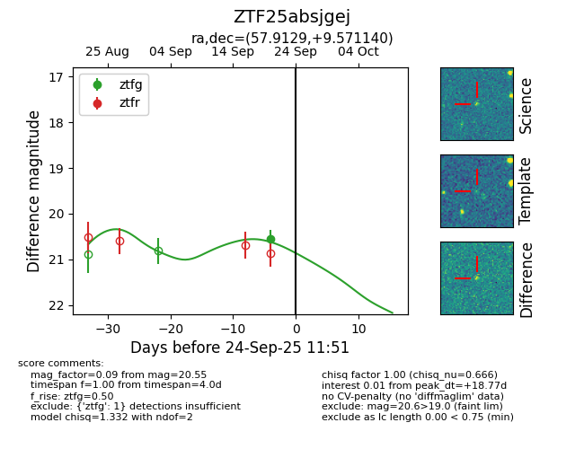
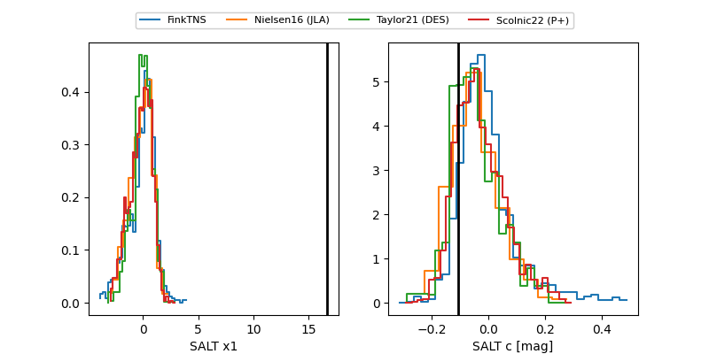

FINK: ZTF25absjgej
Lasair: ZTF25absjgej
ALeRCE: ZTF25absjgej
ZTF25absjgej (ztf,fink)
equatorial (ra, dec) = (57.9129,+9.57114)
galactic (l, b) = (179.2220,-32.96730)


last ztfg=20.55
1 ztfg detections